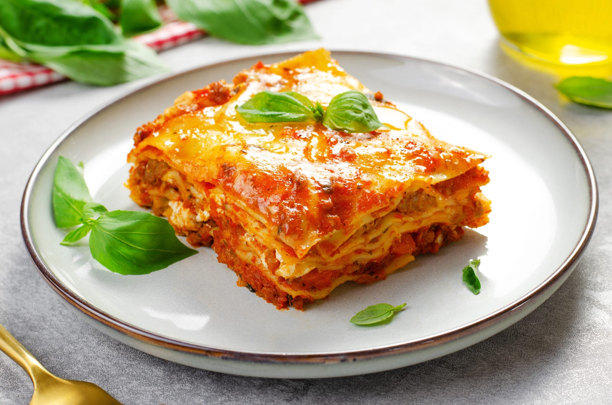
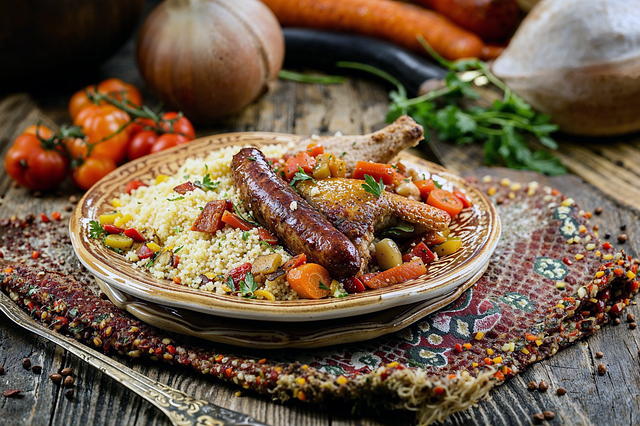
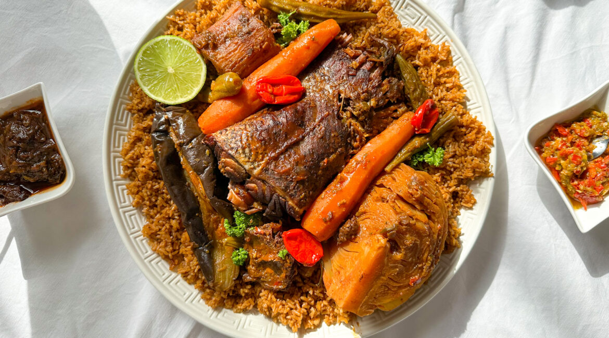
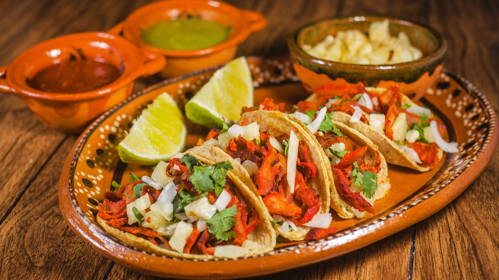
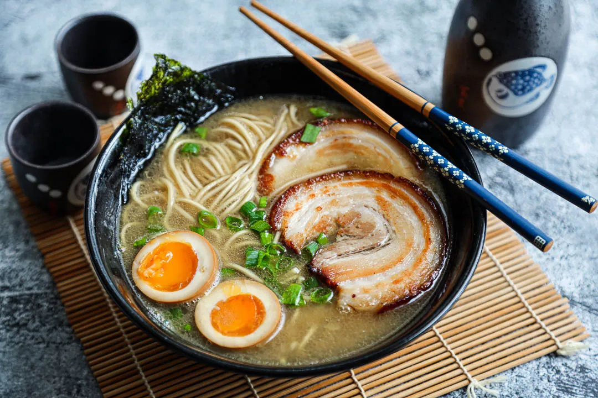

Un voyage culinaire à travers le monde
Découvrez nos plats emblématiques, préparés avec passion et authenticité.
Voir le menuNos Plats Phares

Lasagnes à la bolognaise
Italie | Pâtes, viande hachée, béchamel

Couscous royal
Algérie | Semoule, légumes, merguez

Thiéboudienne
Sénégal | Riz, poisson, sauce tomate

Tacos al pastor
Mexique | Tortillas, viande marinée, ananas

Butter chicken
Inde | Poulet, sauce tomate, épices

Ramen tonkotsu
Japon | Nouilles, bouillon de porc, œuf mariné
À propos de nous
Bienvenue chez Saveurs du Monde, où chaque plat raconte une histoire. Nous sélectionnons des ingrédients frais et des recettes traditionnelles pour vous offrir une expérience culinaire unique, inspirée des quatre coins du globe.
Que vous soyez amateur de cuisine épicée, de saveurs méditerranéennes ou de plats réconfortants, notre menu saura vous satisfaire.